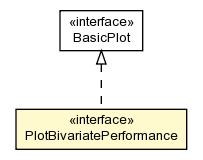

com.isnotworking.recfwk.vis
Interface PlotBivariatePerformance

- All Superinterfaces:
- BasicPlot
public interface PlotBivariatePerformance
- extends BasicPlot
Plots experimental data where your have a series two variables and an
associated performance rate.
- Author:
- ricardocabral
|
Method Summary |
void |
addPerformanceSeries(float[] variable1,
float[] variable2,
float[] performance,
java.lang.String performanceLabel,
java.lang.String variable1Label,
java.lang.String variable2Label,
java.lang.String plotType)
Adds a series of experimental values for a two variables and their
associated performance. |
| Methods inherited from interface com.isnotworking.recfwk.vis.BasicPlot |
save |
addPerformanceSeries
void addPerformanceSeries(float[] variable1,
float[] variable2,
float[] performance,
java.lang.String performanceLabel,
java.lang.String variable1Label,
java.lang.String variable2Label,
java.lang.String plotType)
- Adds a series of experimental values for a two variables and their
associated performance.
- Parameters:
variable1 - variable1 values. This array dimension should be equal to the
performance array and to the other variable array.variable2 - variable1 values. This array dimension should be equal to the
performance array and to the other variable array.performance - performance values.performanceLabel - performance measure namevariable1Label - variable1 namevariable2Label - variable2 nameplotType - the type of multivariate plot to draw. Should be one of:
- "colorheatmap" - 2D scatterplot with a variable on each
axis and performance coded as the point color
- "grayheatmap" - 2D scatterplot with a variable on each
axis and performance coded as the point shade of gray
- "heightmap" - 3D plot, where performance is represented as
the Z (height) axis